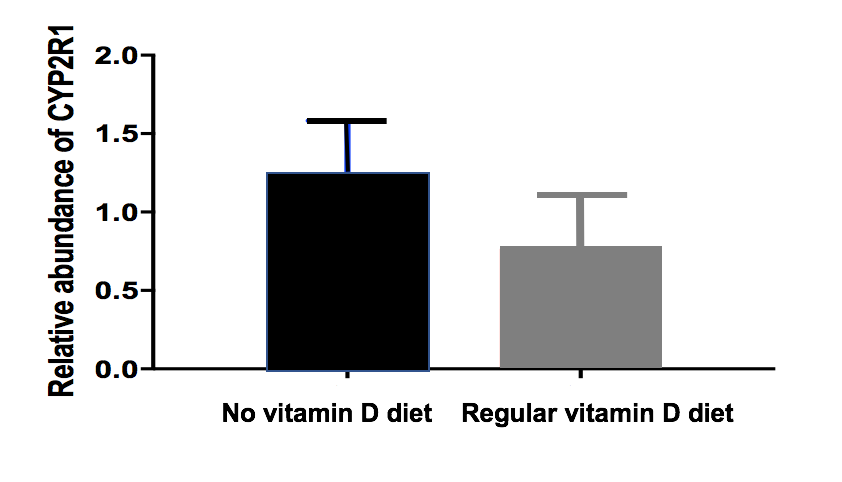
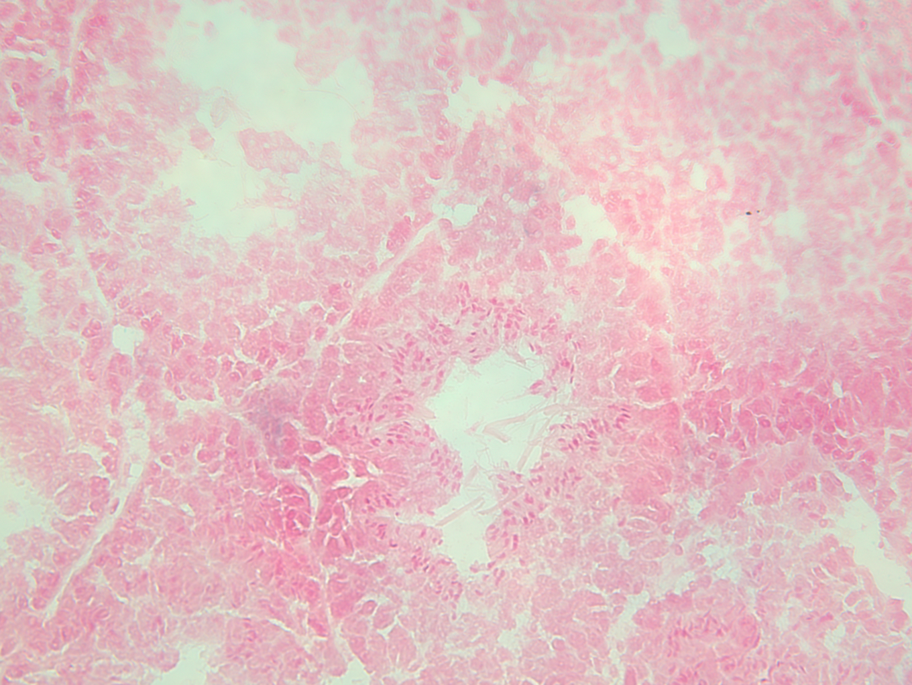
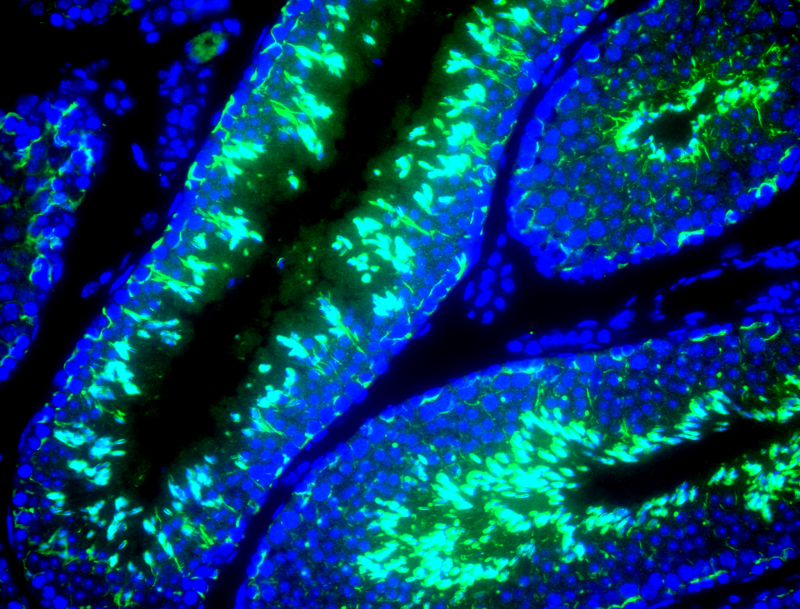
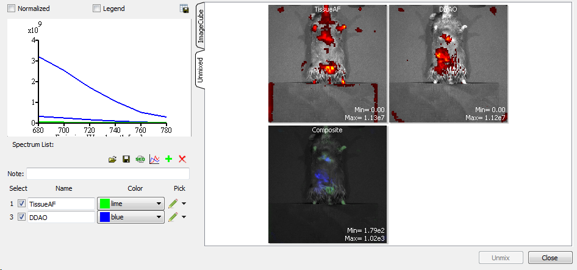
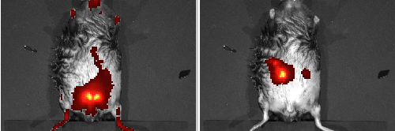
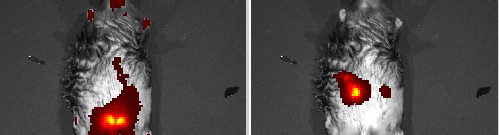
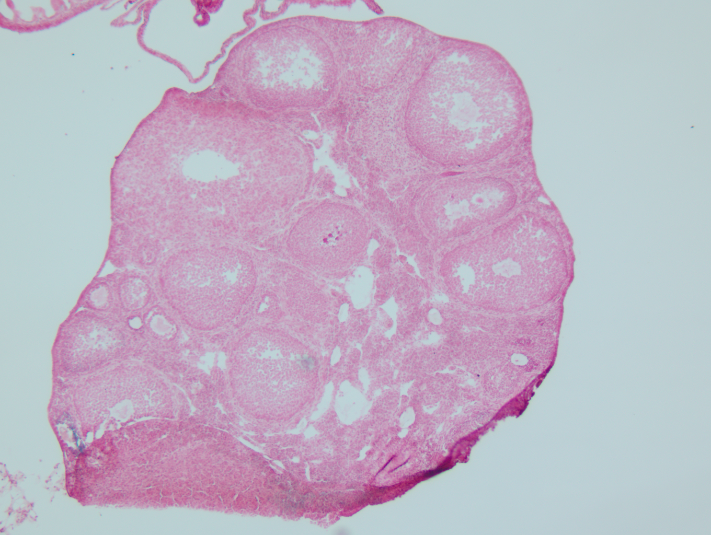
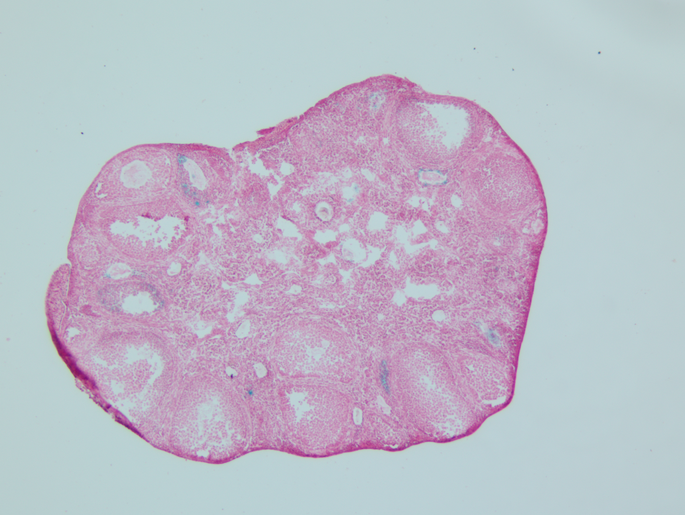
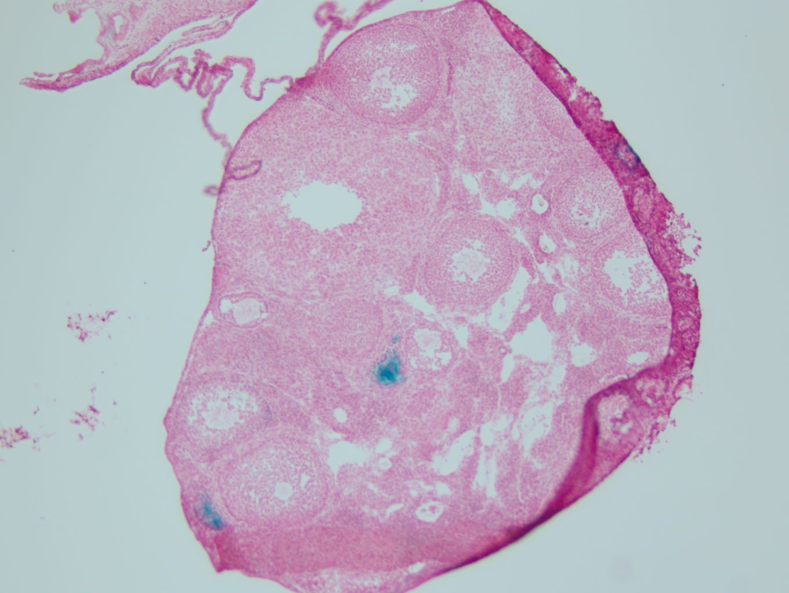

Q2 — "How Does Disease Lower Vitamin D?"
Goal: a figure that shows reduced hepatic 25-hydroxylase activity in disease (obesity, aging). LacZ-staining slides are the most promising visual evidence of liver-cell-level CYP2R1 expression. Note: WMF files in this directory are not viewable here — 13 .wmf files exist and may contain the actual activity bar charts; if Jeff wants those rendered, Ace Scout can convert via ImageMagick or LibreOffice headless.











